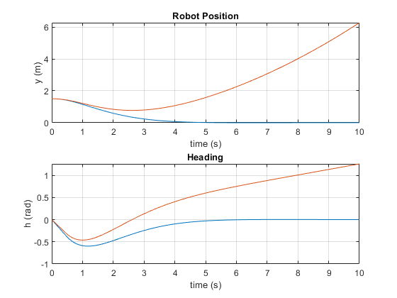

N = 1000;
h = 0.01;
v = 1;
w_min = -pi/4;
w_max = pi/4;
y0 = 1.5;
h0 = 0;
r = 250;
Q = [250 0; 0 250];
f = zeros(3*N,1);
H = diag(ones(N,1)*r);
for i=1:N
H = blkdiag(H,Q);
end
H = 2*H;
A = zeros(2*N,N);
for i=1:N
A(2*i,i) = -h;
end
diag1 = [0, repmat([-h*v, 0], 1, N-1)];
diag2 = -1*ones(2*N-2,1);
Temp = eye(2*N) + diag(diag1,-1) + diag(diag2,-2);
A_comp = [A, Temp];
b = [y0+h*v*h0; h0; zeros(2*N-2,1)];
Temp = [diag(-1*ones(N,1)); diag(ones(N,1))];
B = [Temp zeros(2*N, 2*N)];
c = [-ones(N,1)*w_min; ones(N,1)*w_max];
[x, fval,exitflag,output,lambda] = quadprog(H,f,B,c,A_comp,b);
w = x(1:N);
optimal = reshape(x(N+1:3*N), [2,N]);
y_opt = optimal(1,:);
h_opt = optimal(2,:);
y = zeros(1,N+1);
y(1) = y0;
heading = zeros(1,N+1);
heading(1) = h0;
for i=1:N
y(i+1) = y(i) + h*v*heading(i);
heading(i+1) = heading(i) + h*w(i) + h*pi/25;
end
figure()
t= (0:N)*h;
fig(1) = subplot(2, 1, 1);
plot(t,[[y0,y_opt]; y]);
title('Robot Position')
ylabel('y (m)')
xlabel('time (s)')
grid on
fig(2) = subplot(2, 1, 2);
plot(t,[[h0, h_opt]; heading]);
title('Heading');
ylabel('h (rad)');
xlabel('time (s)')
grid on
linkaxes(fig, 'x');
Minimum found that satisfies the constraints.
Optimization completed because the objective function is non-decreasing in
feasible directions, to within the default value of the optimality tolerance,
and constraints are satisfied to within the default value of the constraint tolerance.
